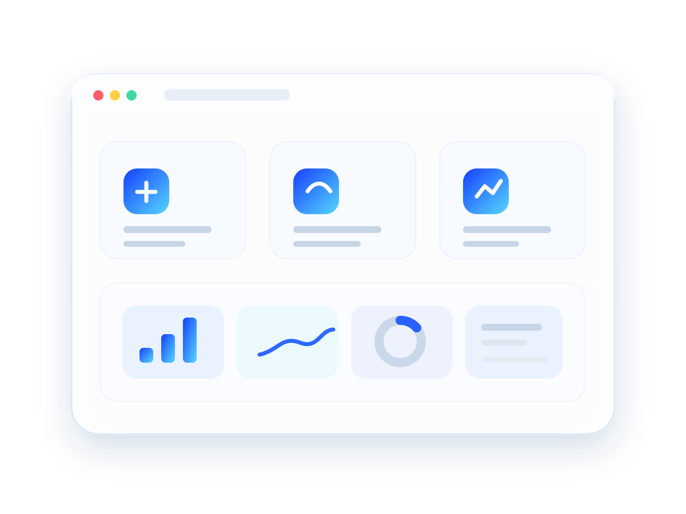
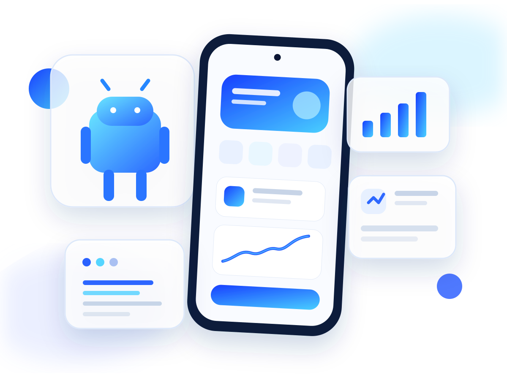
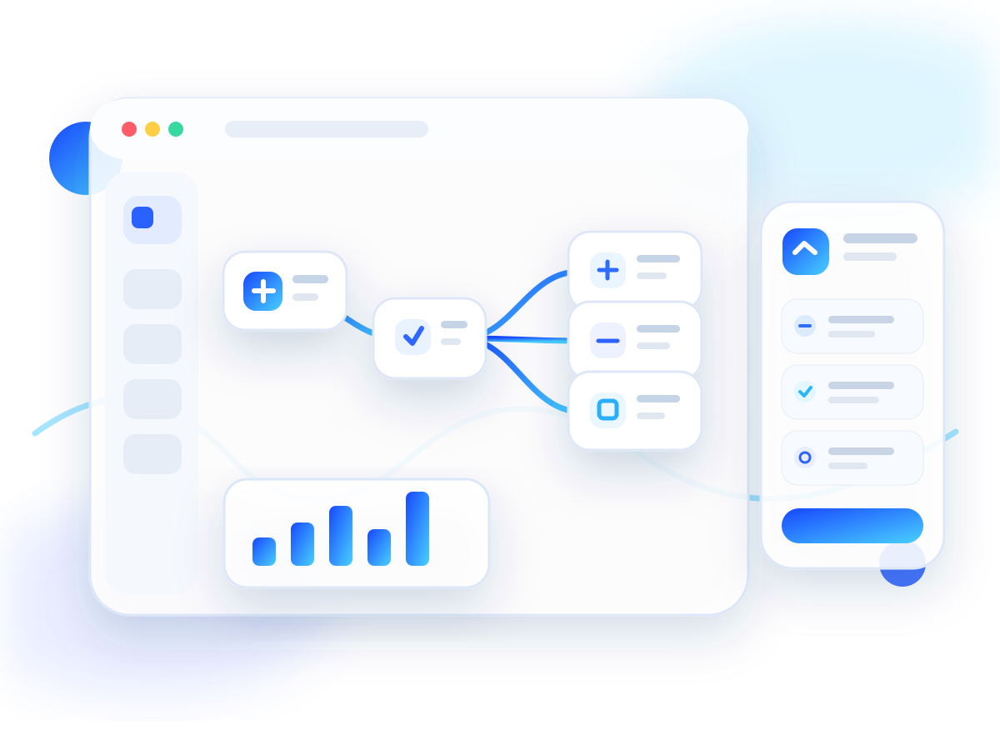
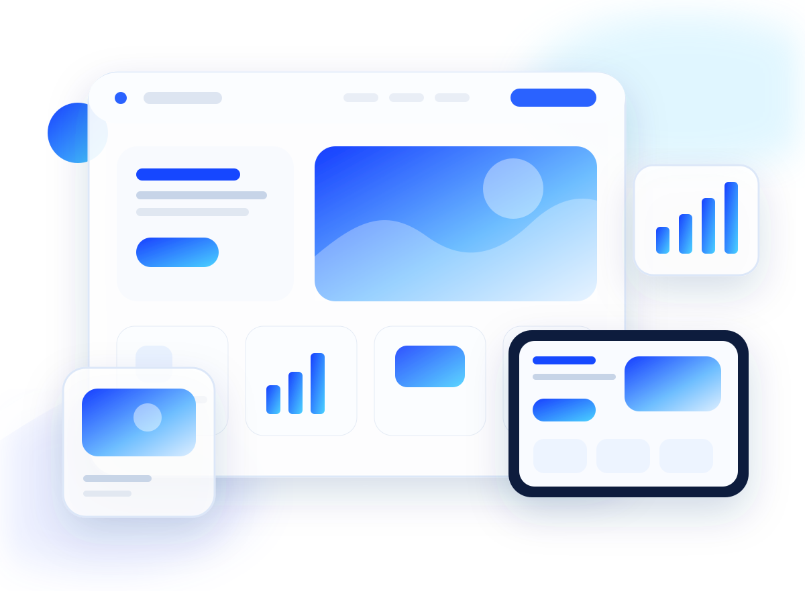
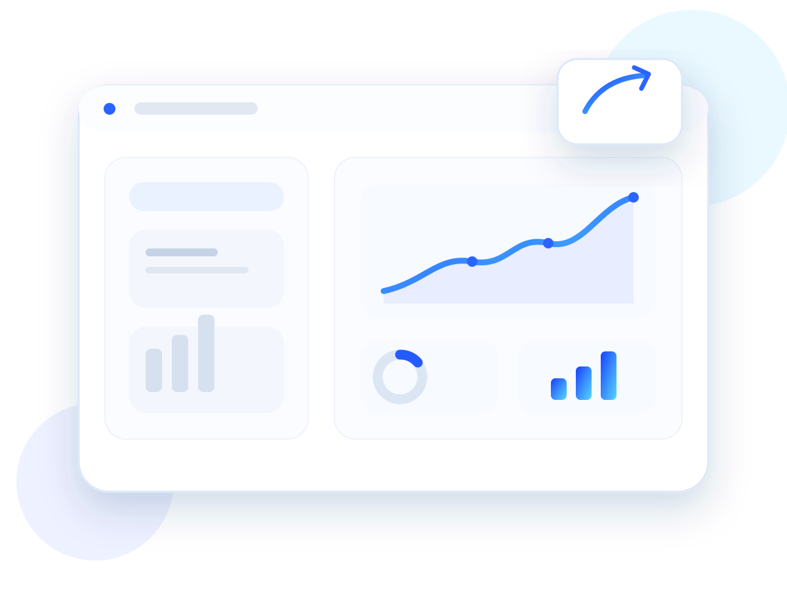

Cuando tu negocio necesita verse tan profesional como realmente es.
Servicios01Presentar mejor 02Trabajar mejor 03Crecer mejor
Tecnología que tiene una razón para existir.
No vendemos funciones porque sí. Construimos cuando una web puede generar más confianza, una app puede ordenar una experiencia o una automatización puede ahorrar trabajo repetitivo.
Cuando una tarea manual se puede simplificar con software.
Cuando una experiencia más clara puede abrir nuevas oportunidades.

01 · Android
Aplicaciones Android
Una app tiene sentido cuando el teléfono puede convertirse en una herramienta real para tu usuario o para tu operación.
- Aplicaciones nuevas
- Interfaces y flujos claros
- Funciones específicas
- Preparación para pruebas o publicación
Si hoy resolvés una parte importante de tu trabajo con mensajes, notas, archivos sueltos o pasos repetidos, una app puede convertir ese proceso en algo más ordenado y fácil de usar.

02 · Navegadores
Extensiones y automatización
Hay tareas que no necesitan una plataforma enorme. A veces alcanza con agregar la función correcta exactamente donde trabajás todos los días.
- Extensiones nuevas
- Automatización de tareas
- Mejoras de productividad
- Evolución de extensiones existentes
Si repetís los mismos clics, copiás información entre páginas o necesitás simplificar un flujo dentro del navegador, una extensión puede ahorrar pasos sin cambiar toda tu forma de trabajar.

03 · Web
Tu negocio puede ser excelente. Si online no lo parece, perdés confianza.
Una web profesional ordena lo que ofrecés, muestra por qué elegirte y facilita que una visita termine en una consulta.
- Te encuentran
- Te entienden
- Confían más
- Te contactan más fácil
No se trata de tener una página. Se trata de que tu negocio se vea tan profesional como realmente es.

04 · Evolución
Proyectos existentes
Un producto no tiene que empezar de cero para mejorar. A veces el cambio correcto es corregir, ordenar o rediseñar lo que ya existe.
- Corrección de errores
- Mejoras de interfaz
- Nuevas funciones
- Revisión y preparación para publicar
Si tu web o producto funciona pero ya no representa la calidad de tu negocio, una mejora bien enfocada puede cambiar la percepción sin rehacer todo desde cero.
